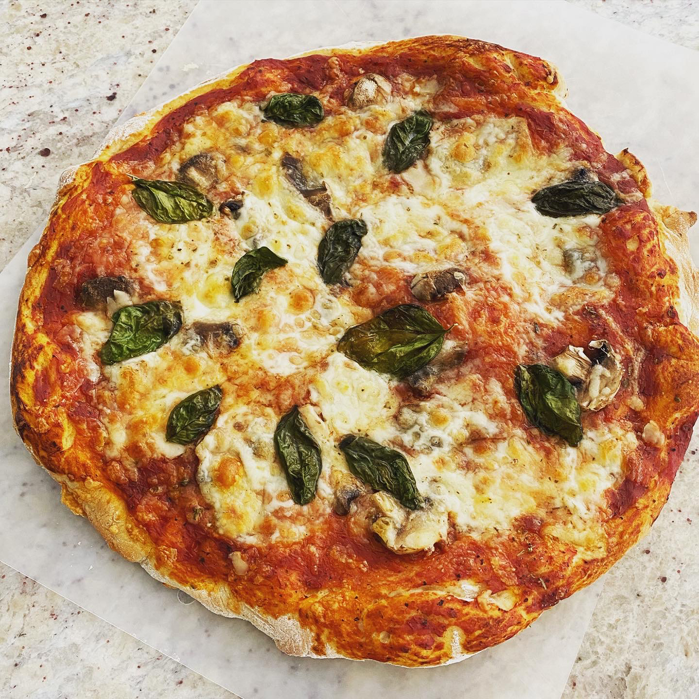

Pizza

Picture of pizza, courtesy of AllRecipes
A delicious option for homemade pizza! Butter garlic sauce, chicken, tomato, ricotta,
and parmesan cheeses are baked together for a delightfully light pizza.
Ingredients
- 1 Skinless, boneless chicken breast half
- 2 Tablespoons Butter or Margarine, softened
- 2 Cloves garlic, minced
- 2 Tablesspoons Chopped Green Onion
- 1/2 Tablespoon Dried Basil
- 1 (10 Ounce) can refrigerated pizza crust dough
- 2 Roma Tomatoes, diced
- 1/2 Cup Ricotta Cheese
- 1/2 Cup Grated Parmesan Cheese
Steps
-
Place the chicken breast in a saucepan with enough water to cover. Bring to a boil, and cook
until no longer pink, about 20 minutes. Drain and cool slightly, then cut into strips.
-
Meanwhile, in a small skilled over medium heat, melt the butter with garlic, onion and basil.
Pour into a chilled dish to cool, and refrigerate until set.
-
Preheat the overn to 350 degrees F(175 degrees C).
- Roll out the pizza dough, place onto a pizza pan or other baking sheet, and spread the herb
butter over the surface using the back of a spoon. Arrange chicken on top, then dot with ricotta cheese.
Top with tomato slices, cilantro and Parmesean cheese.
-
Bake for 15 to 20 minutes in the preheated oven, until crust is browned and center is cooked through.
Return to main page